معرض أفق — العربية
لقطات تلفزيون فعلية كاملة 1920×1080 مع حجب للخصوصية فقط. المستطيلات ليست عناصر في التطبيق. لم تُركّب أسماء أو أيقونات. الصور من أدلة سابقة، وليست اختبار تشغيل جديداً؛ راجع المصادر والتوثيق.
نسخة محلية للمراجعة — لم تُرفع الصور ولم يُنشر إصدار. المصدر المعتمد 7091b90 ؛ بصمة APK تبدأ 17fe36e3.
السمات
ثلاث لوحات ألوان مع توزيع واحد للرئيسية الكاملة.
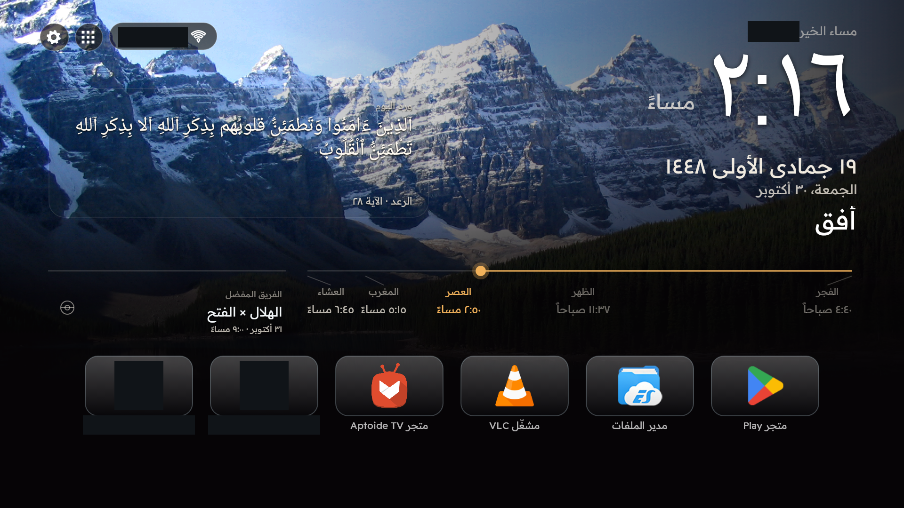
الرئيسية — الكلاسيكي — الرئيسية كاملة كما التُقطت: الساعة والتواريخ والورد والصلاة والمباريات وأزرار التنقل وشريط المفضلة. حُجب الاسم الخاص واسم الشبكة وتطبيقان خاصان، مع إبقاء أيقونات التطبيقات العامة.
لغة اللقطة: العربية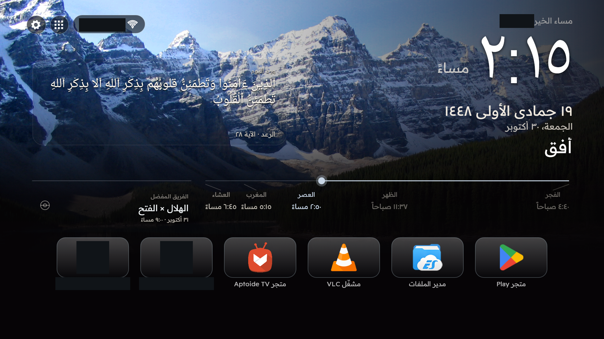
الرئيسية — منتصف الليل — الرئيسية كاملة كما التُقطت: الساعة والتواريخ والورد والصلاة والمباريات وأزرار التنقل وشريط المفضلة. حُجب الاسم الخاص واسم الشبكة وتطبيقان خاصان، مع إبقاء أيقونات التطبيقات العامة.
لغة اللقطة: العربية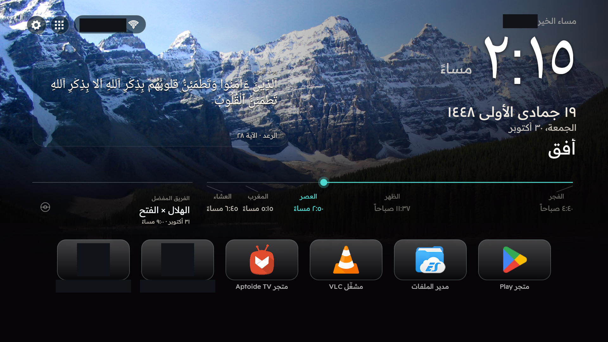
الرئيسية — الساحل — الرئيسية كاملة كما التُقطت: الساعة والتواريخ والورد والصلاة والمباريات وأزرار التنقل وشريط المفضلة. حُجب الاسم الخاص واسم الشبكة وتطبيقان خاصان، مع إبقاء أيقونات التطبيقات العامة.
لغة اللقطة: العربيةالرئيسية والخلفيات السينمائية
صورة الغروب لقطة عربية فعلية؛ ولا يُدّعى توفر لقطة غروب إنجليزية.
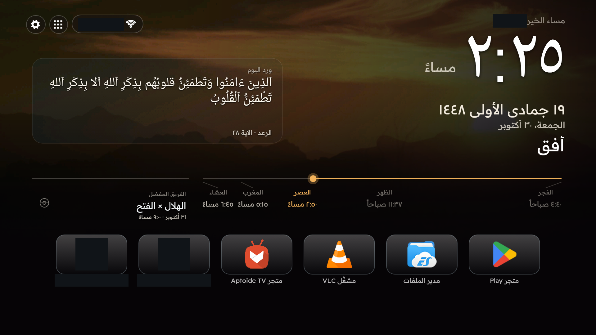
الغروب السينمائي والتعتيم — مشهد الغروب الحقيقي مع التعتيم. الخلفية مستقلة عن السمة، ولا تغيّر أقنعة الخصوصية توزيع الواجهة.
لغة اللقطة: العربيةالتطبيقات المفضلة وحجم الشريط
أحجام صغير ومتوسط وكبير وصفحات البطاقات الكاملة إعدادات فعلية. تُبقي صور الرئيسية الشريط كاملاً، مع حجب الإدخالات الخاصة فقط.
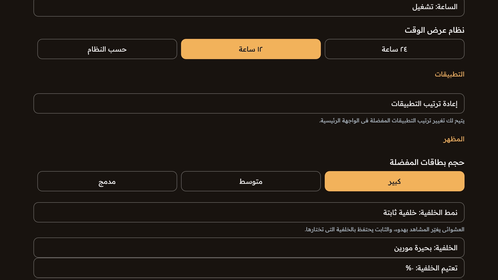
الخلفية الثابتة وحجم المفضلة — الوضع الثابت والمشهد المختار والحجم الكبير للمفضلة وسطر التعتيم كما ظهرت فعلياً. سطر الفترة أسفل مجال العرض؛ فلا تثبت هذه اللقطة وحدها حالته المعطلة.
لغة اللقطة: العربيةمكتبة التطبيقات ونقل المفضلة
لقطة الكتالوج الحالية بالعربية. ويتوفر وضع النقل بالعربية والإنجليزية. لم يُفتح تطبيق محمي لإعداد هذا المعرض.
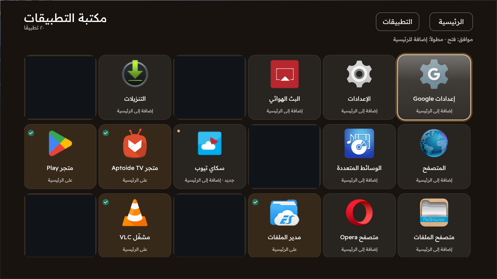
مكتبة التطبيقات — كتالوج التطبيقات الحقيقي مع أيقونات التطبيقات العامة المعروفة. حُجبت خمسة إدخالات خاصة أو لأدوات حساسة؛ وليست المساحات المحجوبة خانات فارغة.
لغة اللقطة: العربية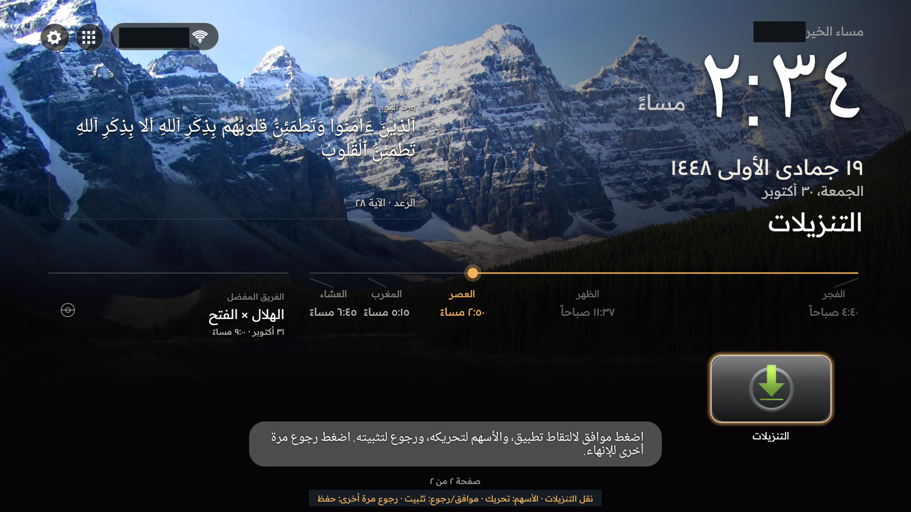
نقل المفضلة بين الصفحات — حالة النقل الفعلية في الصفحة الثانية، مع تعليمات الأسهم وموافق ورجوع. التطبيق المحدد هو التنزيلات، وقد حُجبت البيانات الخاصة في الخلفية.
لغة اللقطة: العربيةالقرآن والحديث والقراءة الكاملة
لقطات القراءة الكاملة بالعربية. يبقى النص القرآني والحديثي بالعربية في لغتي الواجهة، دون إنشاء ترجمة أو نافذة إنجليزية وهمية.
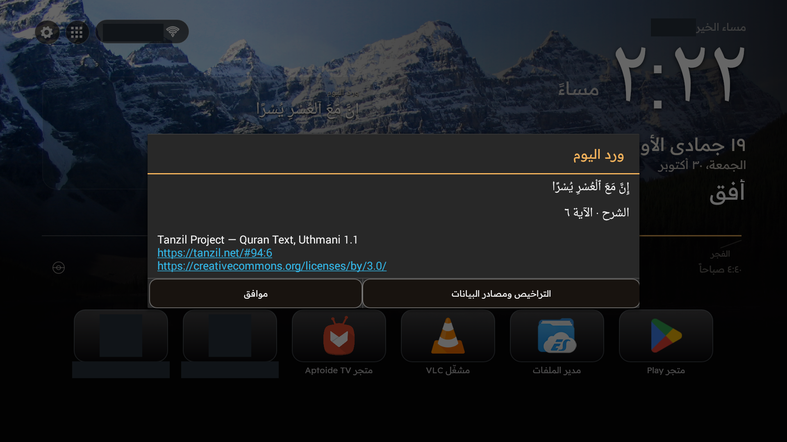
قراءة الآية كاملة — نافذة القراءة الكاملة الفعلية مع المصدر وروابط الترخيص. لم يتغير النص القرآني أو تشكيله، وحُجبت البيانات الخاصة في الخلفية.
لغة اللقطة: العربية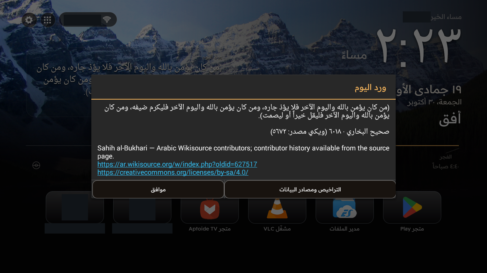
قراءة مقتطف الحديث كاملاً — قراءة فعلية لمقتطف الحديث مع المصدر وترخيص المشاركة بالمثل. بقي النص والتوثيق ظاهرين، ولم تُنشأ ترجمة حديثة.
لغة اللقطة: العربيةخط الصلوات الخمس
يظهر في صور الرئيسية: مواضع متناسبة للصلوات والصلاة التالية والمؤشر. تتبع الحسابات المدينة السعودية المختارة وفق UTC+03:00 دون تغيير توقيت الجهاز.
التاريخان الهجري والميلادي
يظهر التاريخان في صور الرئيسية؛ ويمكن التحكم في إظهار كل منهما بصورة مستقلة وتعديل اليوم الهجري.
التحية الشخصية
تبقى كلمات التحية الحقيقية في الرئيسية، ويُحجب الاسم المحفوظ الخاص فقط. لم يُركّب اسم تجريبي، وتظل ميزة تخصيص الاسم موجودة.
الخطوط الخاصة بكل لغة
نافذتا الخط العربـي والإنجليزي الفعليتان. تُحفظ الخيارات بصورة مستقلة مع افتراضي معتمد لكل لغة، ومعالجة مخصصة لطباعة الساعة والنصوص الدينية.
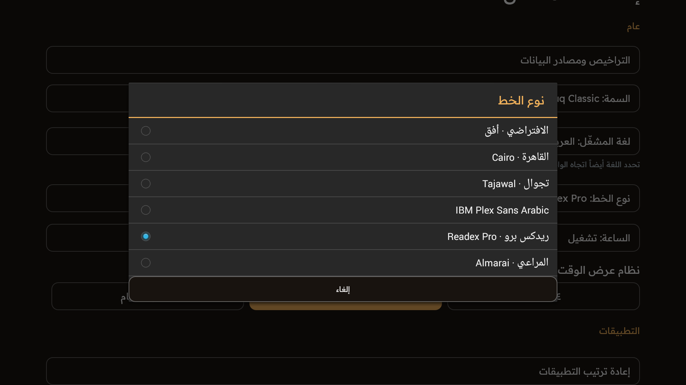
خيارات الخط العربي — الافتراضي مع Cairo و Tajawal و IBM Plex Sans Arabic و Readex Pro و Almarai. هذه الخيارات الفعلية الخاصة باللغة العربية.
لغة اللقطة: العربية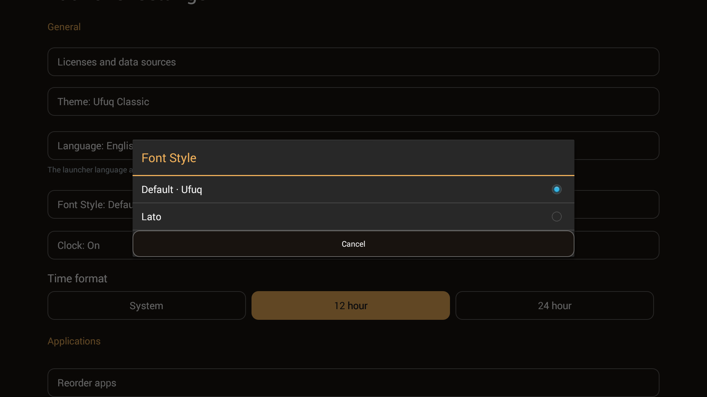
خيارات الخط الإنجليزي — خيارات الإنجليزية الفعلية: الافتراضي و Lato ، مع حفظ مستقل لاختيارات الخط في اللغتين.
لغة اللقطة: الإنجليزية — لقطة بلغة أخرى موضّحة، لا ترجمة مصطنعة للصورةالثابت والعشوائي والتعتيم والفترة
لقطات الإعدادات الحالية عربية. لا تنطبق فترة التبديل على الوضع الثابت وتُحفظ للعشوائي، ولا تثبت الصور وحدها حدوث التبديل بمرور الوقت.
الخلفية الثابتة وحجم المفضلة — الوضع الثابت والمشهد المختار والحجم الكبير للمفضلة وسطر التعتيم كما ظهرت فعلياً. سطر الفترة أسفل مجال العرض؛ فلا تثبت هذه اللقطة وحدها حالته المعطلة.
لغة اللقطة: العربيةالخلفية العشوائية وفترة التبديل — الوضع العشوائي الفعلي مع تعطيل اختيار الصورة الثابتة بصرياً. الفترة المحفوظة ١٥ دقيقة، ولا تثبت هذه الصورة وحدها حدوث التبديل بمرور الوقت.
لغة اللقطة: العربيةلوحة Wi-Fi
تُستخدم لقطة اللوحة الأصلية العربية الحالية فقط، مع حجب أسماء الشبكات. لم يُنفذ اتصال أو إدخال كلمة مرور. تستخدم API 29 فأحدث إعدادات النظام.
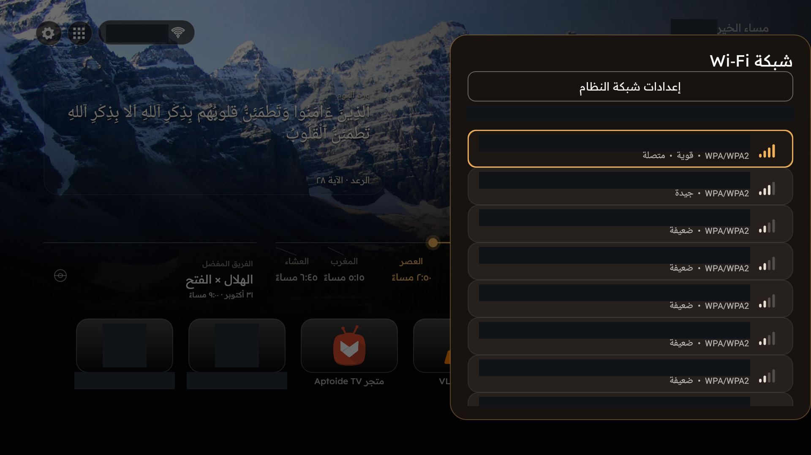
لوحة Wi-Fi الأصلية — لوحة الشبكة الفعلية على API 19. حُجبت جميع أسماء الشبكات الظاهرة وسطر الشبكة المتصلة، مع إبقاء مؤشرات الإشارة والأمان. لم يتغير الاتصال؛ وتستخدم API 29 فأحدث إعدادات النظام.
لغة اللقطة: العربيةالتنقل الآمن بين المشغّلات
فُتحت القائمة العربية ثم أُغلقت، مع حجب أسماء المشغّلات الخاصة. هذه صورة لواجهة الاختيار وليست إثباتاً لتنفيذ تبديل. لم يتغير المشغّل الافتراضي أو أي مشغّل محمي.
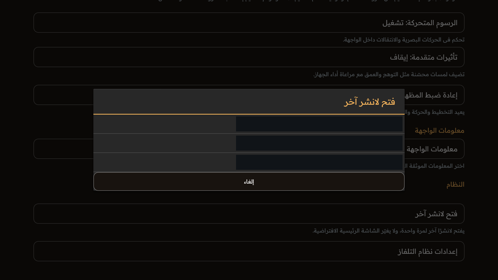
فتح مشغّل آخر بأمان — قائمة فعلية أُغلقت دون فتح أي مشغّل محمي. حُجبت أسماء المشغّلات كلها. الصورة ليست دليلاً على تنفيذ تبديل أو تغيير المشغّل الافتراضي.
لغة اللقطة: العربيةالإعدادات والتخصيص
إعدادات فعلية في كل لغة، دون إنشاء واجهة أو مسار تنقل أو ميزة تطبيق جديدة للحصول على الصور.
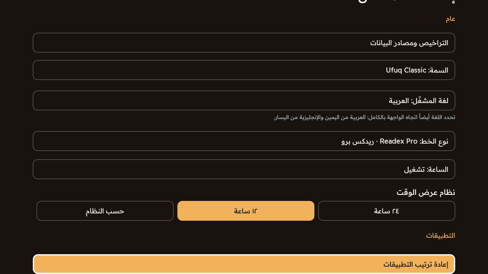
الإعدادات والتخصيص — الإعدادات العربية الأصلية كما التُقطت، دون إنشاء واجهة أو خطوات بدء جديدة للترويج.
لغة اللقطة: العربية